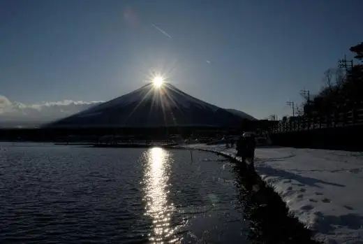
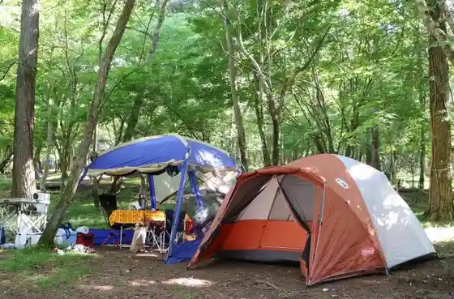
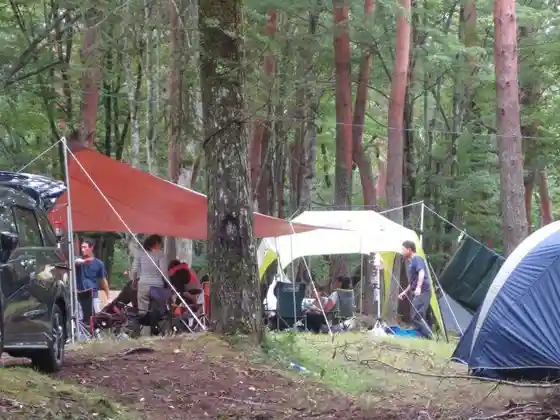
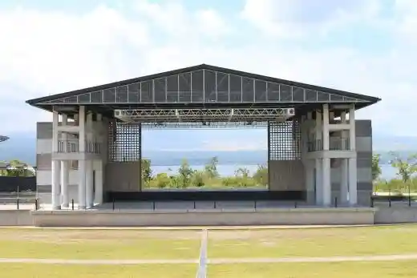

Japan / Yamanashi / Yamanakako
Yamanakako
Yamanakako · Yamanashi
Yamanakako
Highlighted on the Yamanashi map.

Sights
Daiyamondo Fuji Byupointo (Yamanakako) (Daiyamondofujibyupointoyamanakako)
Son'ei Yamanakako Campground (Son'eiyamanakakokyanpujo)

the 508 | CAMP | (Za 508| Kyanpu |)

Yamanakako Koryu Plaza Kirara (Yamanakakokoryupurazakirara)

Yamanakako Kurisumasu Forest Santakurosu Museum (Yamanakakokurisumasu no Mori Santakurosumyujiamu)
Yamanakako Bungaku no Mori Park (Green Park) (Yamanakakobungaku no Morikoen (Guriinpaku))
Yamanakako (Yamanakako)
Yamanakako Meipurukaringu Club (Yamanakakomeipurukaringukurabu)
Suiriku Ryoyo Kuruma Yamanakako no KABA (Suirikuryoyoshayamanakako no Kaba)
Mosukyanpufiirudo (Mosukyanpufiirudo)
Yamanakako Joba Club Basha Michi (Yamanakakojobakurabubashamichi)